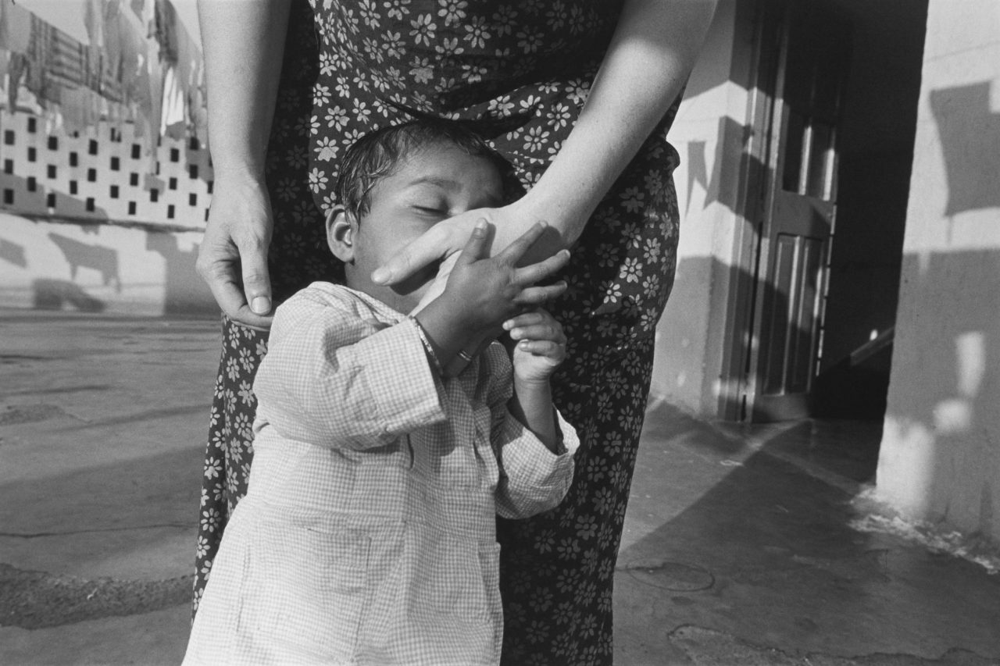

MARY ELLEN MARK
Desde que se graduó en la Annenberg School for Communication de Pensilvania, en 1964, con un título de fotoperiodismo, hasta su muerte, poco más de cincuenta años después, Mary Ellen Mark trabajó como fotógrafa documental, realizando innovadores ensayos fotográficos que, intensamente vividos, exploran las distintas realidades de las personas en situaciones complejas.